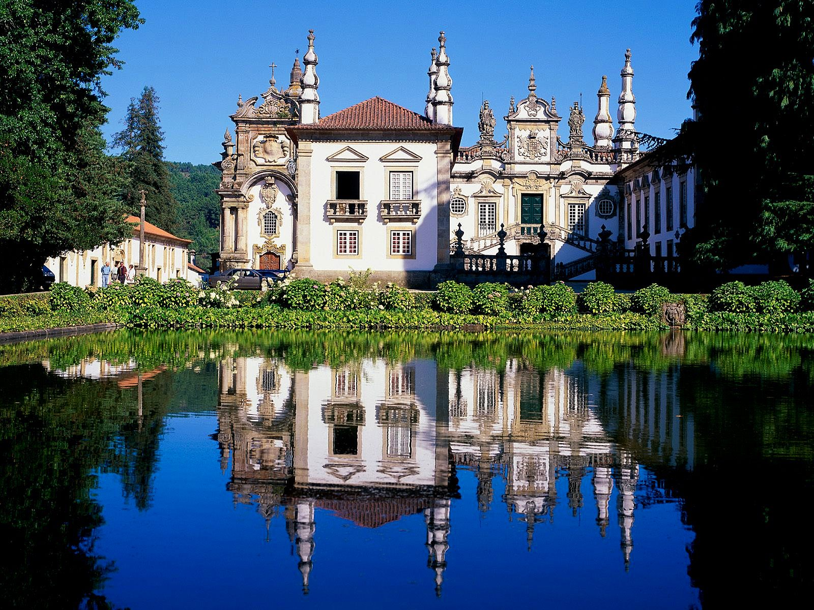

|
|
Home |
Pontos Turísticos |
Curiosidades |
|
Portugal, situado no extremo oeste da Península Ibérica, é um país que encanta pela sua rica história, cultura diversificada e paisagens deslumbrantes. Com uma trajetória que se estende por séculos, desde a sua fundação como nação até os tempos das grandes explorações marítimas, Portugal é uma terra de contrastes que consegue harmonizar o passado com o presente de maneira única. |
|
A arquitetura de Portugal é um testemunho visual de sua rica história. Desde os castelos medievais nas colinas até os azulejos coloridos que decoram fachadas de edifícios, a herança arquitetônica do país é uma fusão de estilos ao longo dos séculos. Cidades como Lisboa, a capital, e o Porto, conhecido pelo vinho do Porto, misturam a tradição com a modernidade, criando uma atmosfera única que atrai tanto os amantes da história quanto os entusiastas da cultura contemporânea. |
 |
|
A gastronomia portuguesa é um deleite para os sentidos. O bacalhau, considerado um verdadeiro ícone da culinária, é preparado de inúmeras maneiras e é quase uma obrigação em qualquer refeição típica. Os pasteis de nata, deliciosos doces de massa folhada e creme de ovos, são uma tentação para os amantes de sobremesas. Além disso, os vinhos portugueses, como o vinho do Porto e o vinho verde, são apreciados em todo o mundo. |
|
As paisagens de Portugal são diversas e impressionantes. Desde as praias douradas do Algarve até as montanhas da Serra da Estrela, passando pelos vales verdejantes do Douro, onde as vinhas em socalcos se estendem até onde os olhos podem ver. A natureza está sempre ao alcance, proporcionando oportunidades para caminhadas, ciclismo e outras atividades ao ar livre. |